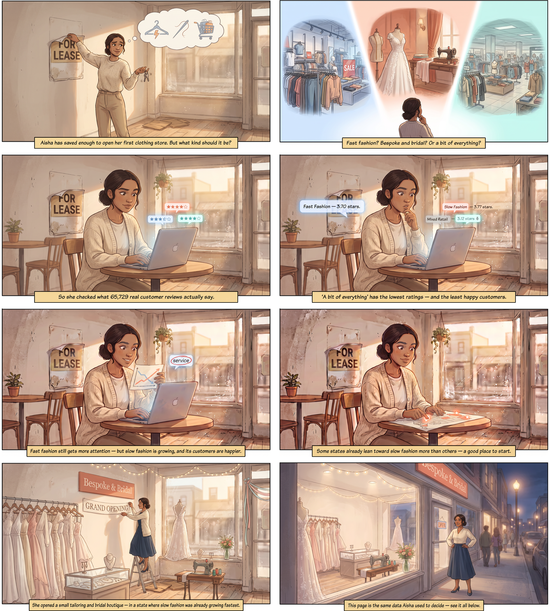

Data Analysis · Retail & Consumer Behavior
Aisha wants to open her first clothing store and can't decide what kind. So she checked what 65,729 real Yelp reviews and tips across 3,100 U.S. clothing businesses actually say — this page is exactly what she found.
00 · The idea, first
Before any dataset, chart, or model — here's the core question behind this whole project, told as a story. Aisha is fictional, but the data she checks is completely real.

The rest of this page shows exactly how Aisha's decision gets tested, measured, and turned into an actual analysis — starting with the data itself.
01 · Intake
This project uses the Yelp Academic Dataset — five raw files (business.json,
review.json, tip.json, checkin.json, user.json), spanning
every Yelp business category, not just clothing. None of them come with a "fast fashion" label already
attached — that had to be built from scratch, below.
Data Cleaning & Preparation
How the raw files became one clean, classified, joined table — every step, in order.
Step 1 — filter
business.json
150,346 × 14
clothing_businesses.csv
3,100 × 10
review.json
6,990,280 × 9
clothing_reviews.csv
58,890 × 9
tip.json
908,915 × 5
clothing_tips.csv
6,839 × 5
checkin.json
131,930 × 2
clothing_checkins.csv
2,909 × 2
user.json
1,987,897 × 22
clothing_users.csv
46,236 × 7
How the filter actually worked
business.json: kept only businesses whose categories field matched one of 6 keywords — Women's/Men's/Children's Clothing, Bespoke Clothing, Bridal, Formal Wear. This is the only file filtered by content.
review.json, tip.json, checkin.json: kept only rows whose business_id appeared among the 3,100 matched businesses. No text matching — if the business qualifies, every one of its reviews/tips/checkins comes along, regardless of what the review text says.
user.json: kept only rows whose user_id appeared among the reviewers/tippers collected above.
Step 2 — classify each business's model
Store-level, not product-level — Yelp has no per-item data, so the label describes a store's overall business model, not every single thing it sells. Every business shown here already passed Step 1, so a "no" all the way down still lands on Fast Fashion — never an unclassified dead end.
Why "Mixed Retail" is separate: department stores (Macy's, Kohl's, Dillard's) carry both fast-fashion lines and premium brands under one roof — labeling them "Fast Fashion" would misrepresent their inventory. Why "Slow Fashion" instead of a generic "Other": it's the recognized industry term that directly opposes Fast Fashion — custom-made, made-to-order, low turnover — and it's a term this analysis can defend, not one it invented.
The result — what each category actually looks like
Real businesses from this dataset, by category.
Step 3 — merge into one table
The 5 filtered files above still live separately — one last step joins 4 of them. clothing_checkins.csv stays out, kept separate for later footfall analysis.
clothing_reviews.csv + clothing_tips.csv
Stacked together — no key, just combined, with a source column
clothing_businesses.csv
Joined on business_id
clothing_users.csv
Joined on user_id
Result: one final table — 65,729 rows, 18 columns —
fashion_analysis.csv. Every analysis on the rest of this page runs on this one table.
Step 4 — fix what the data got wrong
Every analysis on this page accounts for these three issues — found by checking the data, not assumed away.
The salon fix — a topic-modeling side effect
This wasn't found by accident — an LDA topic model on "Slow Fashion" reviews surfaced unexpected words: "hair," "salon," "cut." That was the tell.
28 businesses (like a "Medspa" and a "Blonde Salon & Spa") had qualified only because they offer bridal hair & makeup — not clothing. They were excluded, and the entire pipeline was re-run. Result barely moved (Slow Fashion sentiment 0.634 → 0.629) — confirming the earlier numbers were already solid, but the dataset is now more defensible.
Are the ratings even trustworthy?
Checked whether fake or emotional one-off reviews could be distorting the numbers.
Single-review accounts are more polarized — but they're only 6% of the data, so excluding them moves average ratings by just +0.03 to +0.04 stars. Real signal, small magnitude — worth flagging, not enough to discard.
02 · Exploration
Two independent signals — the star rating customers give, and the sentiment of what they actually wrote — checked separately to see if they agree.
How the sentiment score is actually computed — VADER
The concept: VADER (Valence Aware Dictionary and sEntiment Reasoner) isn't a trained model — it's a lexicon. Roughly 7,500 common words already carry a human-rated "valence" score from −4 (extremely negative) to +4 (extremely positive). A set of grammar-aware rules then adjusts the raw sum: negation ("isn't my favorite" flips the sign), degree modifiers ("very helpful" boosts, "kind of nice" softens), punctuation and CAPS (intensify), and contrastive conjunctions — a "but" shifts weight toward whatever comes after it.
compound = Σ(valence) / √( Σ(valence)² + α )
Why VADER for this dataset: Yelp reviews are short, informal, and punctuation-heavy — the kind of text VADER was built and validated on (tweets, short product/movie reviews — not Yelp specifically, but the same style). No training data or GPU needed — the same lexicon runs on all 65,729 reviews and tips in seconds. The tradeoff is covered honestly in Section 09 — see below.
The pipeline
Five steps, no training involved — the same fixed dictionary and rules run on every review.
Walking through one real review
An actual Fast Fashion review from the dataset — deliberately mixed in tone, to show the negation and "but" rules actually firing.
"The employees were very helpful in pointing me in the right direction for the items I was looking for. Banana Republic isn't my favorite store, but I do like their Pima cotton t shirts."
Result: 13.9% positive words, 4.6% negative, 81.5% neutral (mostly filler words like "the," "in," "for") → compound = 0.551
Labeled positive (compound ≥ 0.05 is the positive threshold used throughout this project; ≤ −0.05 is negative; anything between is neutral). VADER correctly read "isn't my favorite... but I do like" as net positive — catching both the negation and the contrastive "but" without ever being trained on this dataset. What it can't do: infer meaning outside its ruleset — sarcasm, or industry phrases like "cheaply made" vs. "cheap price," are exactly where a contextual model would do better. That tradeoff is addressed directly in Section 09.
Average star rating
Slow Fashion edges out Fast Fashion; Mixed Retail trails both by half a star
Average sentiment (VADER, review text)
−1 (very negative) to +1 (very positive) — text confirms the star ratings
Fast Fashion — sentiment split
Slow Fashion — sentiment split
Mixed Retail — sentiment split
Ratings and sentiment tell the same story independently — Mixed Retail (department stores) is measurably less satisfying than dedicated clothing stores of either speed, on both a 5-star scale and in the actual words customers write.
How the sentiment score is actually computed — BERT
The concept: DistilBERT is a trained transformer model, not a fixed dictionary. It reads the whole sentence at once — every word's meaning is computed in the context of every other word around it (bidirectional attention) — instead of scoring words one at a time. This is exactly what a lexicon structurally can't do, and it's why this project runs it as a second check on VADER. Model used here: distilbert-base-uncased-finetuned-sst-2-english, already fine-tuned for sentiment — this project only ran it, never trained it.
The pipeline
Text passes through the actual neural network — no hand-written rules anywhere in this chain.
Walking through one real review
The very first Fast Fashion review in the dataset — sarcastic, complaint-toned language, to show where BERT and VADER actually pull apart.
"The TV shows are $4.99 and they have commercials! What a cheesy way to make money and a sign of a less than classy hotel, particularly when you pay more than $150 a night. And there is NO complimentary breakfast, just an overpriced buffet, something even the cheapest hotels in California provide."
Same review, same direction (negative) — but very different conviction. VADER's word-by-word lookup finds only a few individually-negative words ("cheesy," "cheapest") diluted by neutral filler, landing near the threshold. BERT reads the sentence as a whole and comes back near-certain. This gap — mild-but-directionally-right vs. strongly-confident — is the same pattern behind the Mixed Retail divergence below.
Side by side — do the two methods agree?
Same 65,729 reviews, two different sentiment engines (above) — here's where their verdicts line up, and where they don't.
80.2%
Fast Fashion — VADER/BERT agreement
81.8%
Slow Fashion — VADER/BERT agreement
72.0%
Mixed Retail — VADER/BERT agreement (lowest)
Fast Fashion
Slow Fashion
Mixed Retail
Both methods agree on the ranking (Slow Fashion ≈ Fast Fashion > Mixed Retail) — the headline finding holds. But they diverge sharply on Mixed Retail: VADER calls it net positive (69.4% positive reviews), while BERT calls the same reviews net negative (51.1% negative) — and agreement between the two methods is lowest exactly there (72.0% vs ~81% elsewhere). This isn't a contradiction to explain away — a transformer catches sarcasm and mixed-clause nuance a lexicon structurally can't, so if anything the original Mixed Retail finding was understating how negative that segment's feedback really is.
03 · TF-IDF & Topic Modeling
TF-IDF surfaced the words each group's reviews use disproportionately more than the others' — the vocabulary itself tells a story before any complaint is even categorized.
How the distinctive terms are actually found — TF-IDF
The concept: a word that appears constantly everywhere ("the," "good," "store") tells you nothing about what makes one group different — so it needs to be suppressed. A word that's common in one group's reviews but rare in the others is exactly what makes that group distinctive — so it needs to be boosted. TF-IDF (Term Frequency × Inverse Document Frequency) does precisely this trade-off, automatically, for every word.
TF-IDF(word, group) = TF(word, group) × log( N / DF(word) )
A word appearing in all 3 groups gets log(3/3) = 0 — it's mathematically zeroed out, no matter how often it's used. A word concentrated in just 1 group keeps its full TF weight. This is why "the" never shows up in any term cloud below, but "bridal" shows up only in Slow Fashion's.
The pipeline
Run once across all 65,729 reviews and tips, then compared per fashion_type group.
Why this matters more than a simple word count: a raw frequency count would just surface "store," "clothes," and "good" for every single group — TF-IDF is what makes the term clouds below actually differentiate Fast, Slow, and Mixed instead of all looking the same.
A second, complementary method — LDA topic modeling
TF-IDF ranks individual words; LDA (Latent Dirichlet Allocation) goes a level further and finds which words tend to co-occur — clustering them into 5 topics per group, unsupervised, with no labels given in advance. It was run on each group's reviews separately (via scikit-learn) as a cross-check on the TF-IDF terms below — and it's what actually caught the beauty-salon misclassification in Section 01 Step 4, when Slow Fashion's topics surfaced unexpected words like "hair" and "salon."
Fast Fashion — distinctive terms
Generic shopping vocabulary — no single dominant theme.
Slow Fashion — distinctive terms
Heavily wedding/bridal-focused — makes sense given the category mix.
Mixed Retail — distinctive terms
Actual brand names + transactional language (return, line, manager).
The vocabulary alone explains why Mixed Retail scores worst on every sentiment metric above — its distinctive words aren't about the product at all. "Return," "line," "manager," "told" point squarely at checkout and service friction, not quality. Slow Fashion's vocabulary confirms Section 4's classification logic (bridal/formal categories genuinely produce bridal/formal conversations), and Fast Fashion's generic, no-single-theme vocabulary matches its "no dominant complaint" pattern in the issue table below. Sentiment scores said how bad; this says why.
A different lens — keyword-tagged issues, not TF-IDF
Negative reviews, by specific issue
% of each group's negative reviews mentioning each issue — a review can mention more than one. Unlike the TF-IDF terms above, this isn't a ranking of distinctive words — each negative review (from Section 02's VADER/BERT labels) was checked against 6 fixed keyword buckets (Quality, Price, Service/Staff, Fit/Sizing, Returns, Selection/Stock) to see which issues it actually mentions.
Service/Staff is the #1 complaint everywhere (52–55%) — the biggest lever is customer experience, not the product. And Fit/Sizing is Slow Fashion's distinct weak point, at roughly 4–7× the other two — high-stakes, since this segment includes bridal wear, where a fit issue is far more costly than in casual clothing.
04 · The headline finding
Measuring each group's share of total review volume per year — not raw counts, since raw counts simply grow as Yelp itself grew. Share isolates the actual shift in relative attention.
Fast Fashion
70.2% → 55.4%
2010 to 2021
↓ 14.8 ptsSlow Fashion
14.5% → 31.2%
2010 to 2021
↑ 16.7 ptsMixed Retail
15.2% → 13.4%
2010 to 2021
↓ 1.8 ptsFast Fashion's drop (14.8 pts) is almost exactly Slow Fashion's gain (16.7 pts) — Mixed Retail stayed roughly flat throughout. The shift is a direct transfer from fast to slow, not a general fashion-industry decline.
Fast Fashion's share of review volume fell from 70.2% (2010) to ~55% (2021). Slow Fashion's share more than doubled, from 14.5% to ~31%. This lines up with the real-world conscious-consumerism trend — Yelp attention has been shifting toward bespoke/bridal/formal businesses relative to mass-market chains, even while Fast Fashion still leads in absolute volume.
05 · Geography
Slow Fashion's share of clothing businesses, state by state. Caveat: the Yelp dataset covers a fixed set of 11 metro areas (Philadelphia, Nashville, New Orleans, Tampa, Edmonton, Indianapolis, Tucson, Santa Barbara, Reno, St. Louis, Boise) — not a random national sample.
37.9%
Illinois — highest Slow Fashion share
12.7%
California — lowest, most Fast-Fashion-heavy
707
Pennsylvania — largest market by far
What the map actually tells us
Fast Fashion dominates every single state — no state flips to a Slow Fashion majority. The real story is degree, not direction: 37.9% (Illinois) vs. 12.7% (California) is the whole spread.
Slow Fashion leans toward smaller East-Coast-adjacent metros — Illinois (37.9%), Delaware (36.0%), New Jersey (32.1%), Missouri (28.7%) — better markets for bespoke/bridal/formal businesses.
Fast Fashion is strongest in the biggest markets — California (81.5% Fast Fashion, only 12.7% Slow) and Alberta (81.1% / 14.3%) are also the two largest absolute markets. More volume tracks with a tighter mass-market grip, not more room for bespoke.
Read every % with sample size in mind. Pennsylvania's 707 businesses make it the most reliable data point on this map — a state with only a handful of businesses can swing its share on a few data points alone.
The map shades whole states, but the data covers one metro inside each. "California is 12.7% Slow Fashion" really means Santa Barbara is — not the state at large. This is the dataset's core limitation (see caveat above), and it's why the dots on the map matter as much as the shading.
06 · Reviewer profile
Split every review by whether the reviewer had Yelp Elite status in at least one year. The common assumption is that experienced reviewers are pickier. The data says the opposite.
Fast Fashion
Slow Fashion
Mixed Retail
Elite reviewers rate every fashion type higher than regular reviewers — the opposite of the "experienced reviewers are harsher" assumption. The gap is largest for Mixed Retail (0.70★ vs. 0.28–0.41★ elsewhere) — casual, first-time shoppers have a notably worse department-store experience than loyal ones.
07 · Operations
Parsed the hours field from 2,772 businesses (89% of the dataset) into total
weekly open hours.
Average weekly operating hours
Mixed Retail runs closest to a walk-in, high-traffic model; Slow Fashion runs closest to appointment-only
Spread is nearly identical across all three (standard deviation ≈18 hours in every group) — no group runs a meaningfully more or less predictable schedule than another. Long hours (Mixed Retail) also aren't converting to satisfaction — see Section 02. It's not an access problem, it's an in-store experience problem.
08 · So what
Everything above, turned into an actual answer for each audience.
For Fast Fashion brands
Service/staff training is the single highest-leverage fix — 52% of negative reviews mention it, more than product quality. Price complaints are surprisingly the highest of the three groups (20.8%) despite the "affordable" positioning — a perceived-value gap worth investigating. Returns also draw the most friction here (9.9%).
For Slow Fashion / bespoke brands
Fit/sizing is a distinct, addressable weakness (7.9% of negative reviews) — worth disproportionate investment given how costly a bad fit is in bridal/formal wear specifically. This segment already leads on rating and sentiment, and its growing relative share (15%→31%) makes it a strong expansion case, especially in states like Illinois, Delaware, and New Jersey.
For Mixed Retail / department stores
Lowest ratings and sentiment of the three — the biggest single improvement opportunity in this dataset. The elite-vs-regular gap is widest here, so onboarding and staff attentiveness for less-frequent shoppers is worth prioritizing over simply staying open longer.
For researchers using this data
Single-review accounts (~6%) skew extreme — don't let a handful dominate a small business's score. This dataset covers 11 fixed metros, not the U.S. Classify at the store level, not the product level — a "Fast Fashion" label describes a business model, not every item on the rack.
09 · Honesty check
Stated plainly rather than glossed over.
Bottom line: this is a genuine, defensible read of customer behavior across a real (if geographically limited) dataset — not a causal claim about the fashion industry at large. The headline finding (Fast Fashion's declining relative share) is the strongest result here for a specific reason: it holds up consistently across all 12 years of the decade, not just a 2010-vs-2021 snapshot — and it's corroborated by a separate line of evidence, not a repeat of the same one. Rating and sentiment (Section 02) measure who's happier right now; volume share (Section 04) measures how attention has shifted over time — two different questions that happen to point the same way, which is a more honest kind of support than claiming one finding was "verified three times."
So, back to Aisha. She opened a small tailoring and bridal boutique — and the data actually backs that up: Slow Fashion leads on rating and sentiment (Section 02), its share of customer attention has more than doubled over the past decade (Section 04), and several states show real room to grow into (Section 05). It isn't a guaranteed win — fit/sizing is a real, addressable risk for exactly this kind of store (Section 08) — but of the three paths she considered, this is the one every independent signal in this dataset points toward.
That's a wrap — if you scrolled this far without skimming, you deserve a snack 🍪.